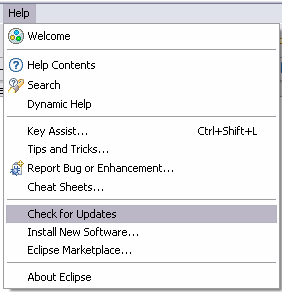
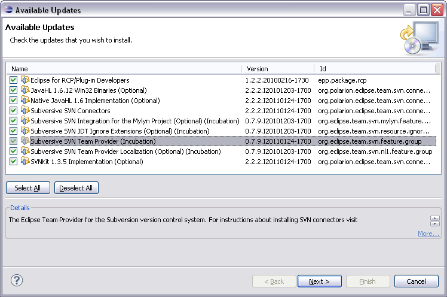

Subversive update instructions (Eclipse.org version installed)
Subversive can be simply updated from within Eclipse using update manager. To update Subversive:
-
Ensure you have enabled Subversive and Subversive Connectors update sites at 'Preferences > Install/Update > Available Software Sites'
-
Select menu item 'Help > Check for Updates'

-
Then mark software you want to update and follow through update wizard steps.
